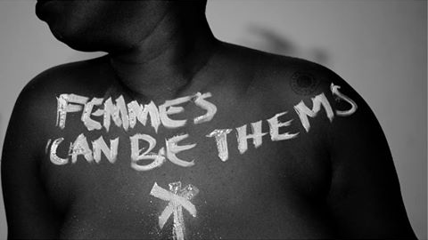
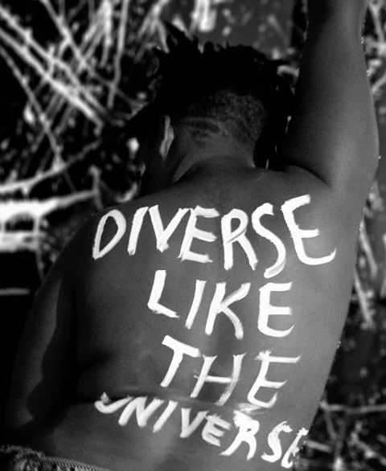
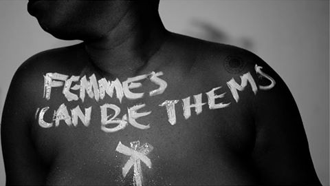
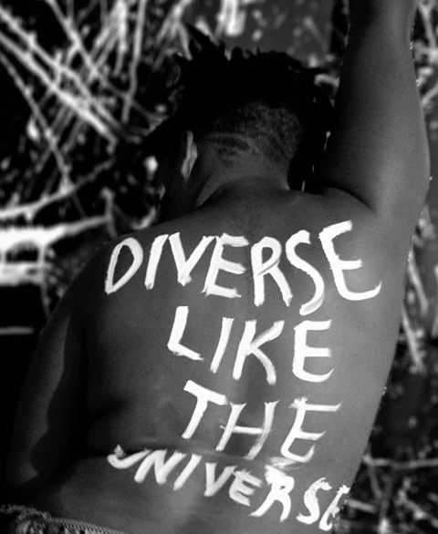

What We Do.
At Queerly Beloved, we believe in creating a just world where women and girls have the same rights as men and boys. We tackle the most difficult issues, challenge ingrained cultural assumptions and call out inequality wherever we see it. Social change often begins with legal change and so we use the power of the law to create enduring equality for women and girls everywhere.
.jpeg)
.jpeg)
Everyday, women and girls around the world face violence and discrimination. 1 in 3 women will experience physical or sexual violence in their lifetime, regardless of age, background or country, and every country in the world has laws that treat women and girls as second-class citizens. Sexual exploitation, violence, harmful cultural practices and systemic inequalities violate their human rights and prevent them from reaching their potential. This kind of inequality is bad for everyone, not just for women: research shows that where women and girls are treated unfairly, there is more societal conflict and less economic stability.
Our "Ubuntu" Campaign.
The world is at a turning point. People everywhere understand and support the idea of gender equality. They know it’s not just a women’s issue, it’s a human rights issue. The Ubuntu Campaign is an invitation for men and people of all genders to stand in solidarity with women to create a bold, visible and united force for gender equality. The men of Ubuntu aren’t on the sidelines. They’re working with women and with each other to build businesses, raise families, and give back to their communities. At Ubuntu we also use body art to spread messaging around gender equality.
 



Imagine a new world—one created by bold young women, coming together to decide their own futures and shaping the decisions that affect not only their lives, but their communities, their societies, and the world. Queerly Beloved has supported women and girl’s human rights movements. We believe that strengthening young women’s leadership is critical to the sustainability and resiliency of women’s movements and long-term social transformation.
Services
| Service | Support Staff | Contacts |
|---|---|---|
| Paralegal Services | Caroline Kihara | 0206002240 |
| Security Response | Tabby Mbuthia | 0204009876 |
| Gender Desk Services | Rowens Benson | 0207007856 |
We rely on partner organizations, volunteers, and donors to help us carry out our mission to empower and educate our communities in Kenya. With your help, we can continue to provide necessary avenues for learning, amplify marginalized voices, and make an impact. Join us. Donate